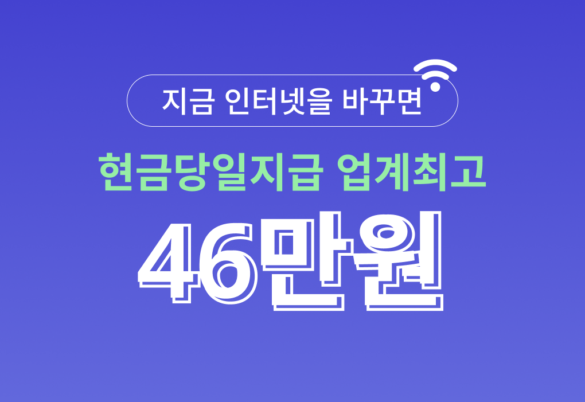
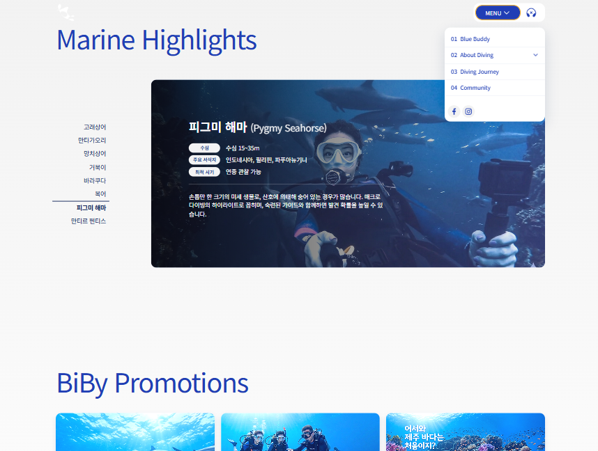

기획을구현까지 연결하는
UIUX 디자이너 & 퍼블리셔
진홍주 입니다
사용자 흐름을 설계하고, 이를 실제 인터페이스로 구현합니다


000’s Information
About
사용자 경험을 설계하는 데서 끝나지 않고, 이를 실제 화면으로 구현까지 연결하는 UIUX 디자이너입니다.
문제를 구조적으로 정의하고, 디자인과 퍼블리싱을 통해 일관된 사용자 경험을 만드는 데 집중합니다.
UX Approach
- 사용자의 행동 흐름을 먼저 이해하고, 문제를 구조적으로 정의하는 것에서 시작합니다.
- 불필요한 단계를 줄이고, 사용자가 자연스럽게 다음 행동으로 이어질 수 있도록 경험을 설계합니다.
Process
- 문제 정의 → 사용자 흐름 설계 → 와이어프레임 → UI 디자인 → 퍼블리싱 순으로 작업합니다.
- 각 단계에서 의도를 명확히 하고, 구현 과정에서도 디자인의 일관성을 유지하는 것을 중요하게 생각합니다.
Strength
- 복잡한 문제를 구조적으로 정리하는 능력이 있습니다.
- 사용자 중심의 흐름을 설계하고, 작은 인터랙션까지 경험으로 연결하는 디테일을 중요하게 생각합니다.
- 디자인과 구현 사이의 간극을 줄이는 데 강점을 가지고 있습니다.
Publishing
- Desktop 환경을 중심으로 작업하며, 다양한 해상도에 대응하는 반응형 구조를 설계합니다.
- 모바일과 태블릿 환경에서도 일관된 사용자 경험을 제공하기 위해 테스트를 진행합니다.
Working Environment
- Desktop 중심 작업
- 반응형 고려 설계
- 다양한 디바이스 테스트
Visual Design
브랜드와 메시지를 시각적으로 전달하는 그래픽 디자인 작업입니다.



UX / UI & Publishing
사용자 경험을 설계하고, 이를 실제 인터페이스로 구현한 프로젝트입니다.


Team Project
협업을 통해 사용자 경험을 완성한 프로젝트

다이빙 정보 플랫폼 UX 개선 프로젝트
팀원들과 협업하여 사용자 경험 개선을 목표로 진행한 프로젝트입니다.
UX 설계와 UI 디자인, 퍼블리싱을 담당하며 사용자 흐름을 단순화하는 데 기여했습니다. 기획 의도를 조율하고 실제 구현까지 연결하는 역할을 수행했습니다.
팀원들과의 커뮤니케이션을 통해 요구사항을 구체화하고, 디자인과 구현 과정에서 발생하는 차이를 조율했습니다. 사용자의 흐름을 기준으로 우선순위를 정리하며, 보다 직관적인 경험을 제공하는 데 집중했습니다.